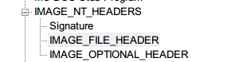

前言
接触PE结构已经不是一天两天的事了…记得在去年的十一月份我就初步的接触了PE结构 但是因为那时候并不能沉下心思去看 去了解PE结构(究其原因应该是对未来的迷茫以及急于求成的心态)于是很多细节都没有去理解(话说回来那时候还真是年轻 认为做题就是一切 对任何东西都不求甚解) 现在想起来 那时候跟vvv学长诉苦感到迷茫的时候 vvv学长告诉我要慢点学 现在才感觉到慢点学真正的含义是什么…(感觉绕了不少弯路) 抱着觉今是而昨非的态度 这两天认认真真的 对着PEview/010editor/od/逆核 将以前没能弄顺/没有理清楚的东西给整理了一遍 也想更新一下博文 就记录一发吧！
这个系列有多篇 具体怎么分…看我学到哪里吧233
RVA RAW VA
所谓RAW 就是数据在文件中所在的位置 而RVA(Relative Virtual Addresses)则是程序中数据在内存中映射的位置与其文件头映射的位置的差值(线性地址) 大体一看 两者都是关于头的偏移 自然而然的会想到这两者是一样的 但其实不然 具体原因介绍到NT可选头的参数时再讲 简单来说就是padding的长度发生了改变 这里先上公式
RAW = RVA - (本节区)RVA + (本节区)PointerToRawData
–摘自逆核
具体的应用下面会做解释
当然也有不匹配这个公式的情况发生(这个等下一篇再补充吧 现在还没碰到233)
VA就是没有"相对"这个概念 即数据映射到内存中的虚拟地址
PE分布以及某些部分的介绍以及说明
这边就放一张基本被看烂的图片吧233
请注意 并不是所有的PE文件都只有这三个节区 这里不过只是一个例子而已
那么这里就先来逐一粗略介绍各个段落的作用
DOS头
还是摘自逆核 这个东西没啥用..不过是历史来的累赘罢了.. 除了第一个魔数之外 最有用的就是最后一个参数 它里面存着NT头的偏移DOS存根
里面存放着一段代码和一串字符串 那段代码的唯一的作用就是将那串字符串输出 这也是历史遗留的累赘NT头
 可以看见 分为三个部分:签名 文件头以及可选头 签名没什么好说 就是字符串"PE"而已 我们直接看一下文件头 在文件头可以看到一些比较重要的参数 比如对应的CPU 节区的数量 这个文件的属性(dll/exe/..)以及这个程序运行的位数(32/64) 最后是NT可选头 看一下参数的个数就知道 可选头有多么重要了 里面有这个程序的EP(RVA) 程序映射的基地址 内存中节区对齐的长度 文件里节区对齐的长度 一些安全措施的开启与否(如ASLR) 文件的类型(CUI/GUI) PE头的大小 映射到虚拟空间需要的大小....最后还有一个大数组 我们可以看到 一个程序在储存时与它在运行时对齐的长度是不相同的 也就是他们的padding长度不同 这也就是为什么一开始我们提到RAW和RVA是不同的原因 具体作用后面再谈 到这里差不多就是可选头的全部内容了 在NT可选头之后 就是各个节区的节区头了 具体如下 这里拿.text为例 来说明节区头都有哪些东西 里面有某段节区的大小 在源文件中的偏移以及大小 加载到内存后的RVA和大小 还有就是这段节区的IO属性再后面就是各个节区了…我现在所知道作用的节区如下:
text:代码段
data:存放已经被初始化的数据
bss:为未初始化的数据预留空间 需要注意的是 bss的节区头里 Size of Raw Data 应为0 而Virtual Size不为0 毕竟是预留空间 不占位置 这点相信很容易就能理解
rdata: readonly data 还记得在最前面的那段大数组吗 里面就写了像引入表这些 这些表就储存在rdata段中 下面我们具体看一下这里的数据
这里具体讲一下IAT
根据那个表的数据 我们可以通过之前那个RVA -> RAW的公式 算出IAT那个地址为1D14 根据PEview 可以看见这个地址为IMPORT Directory Table 这个数组
注意 这里面的data都是RVA 那么同样根据之前的公式 再通过PEview 就可以得出指向的数据是啥
这里还是放一张图助于理解
在文件中 IAT指向的数据与INT指向的数据是一致的 但是 一旦程序运行之后 装载器就会利用INT里的名字/前面的标号 依次将对应在DLL的函数的jmp指令的地址填写在IAT中(不然为啥叫引入表嘛233)
至于前面的那一串数字 这应该是在EAT中对应函数函数名预期所对应的下标 后面再说吧233
复(yu)习到这里 先留个记录 欢迎各种指正！